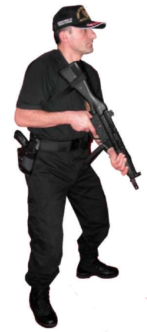

BÖLÜM
TEMEL ATIŞ TEKNİKLERİ
Resim-2.a) Duruş (MP5 Makinalı Tabanca)
b) TUTUŞ (KABZA KAVRAMA)
MP5 makinalı tabancayı tutuş, aşağıdaki gibi olmalıdır 1. Ateş eden el, silahın kabza bölümünden; diğer el, silahın el kundağından tutmalıdır.
2. Silahın dipçiği, omuz boşluğuna yerleştirilerek elmacık kemiği ile kaynak yapılmalı yani elmacık kemiği silahın dipçiğine temas eder bir konumda olmalıdır.
3. Atış yaparken silah, omza biraz baskı yapılarak iki elle tutulmalıdır. (Bakınız Resim-2.b) 33
Resim-2.b) Tutuş/Kabza Kavrama (MP5 Makinalı Tabanca) c) NİŞAN ALMA
Nişan alma, göz, gez, arpacık ve hedef ilişkisini tanımlamaktadır. Arpacık, hedefin tam ortasına yerleştirilip gezden bakıldığında, arpacığın içinde bulunduğu yuvarlak daire, gezin yuvarlak dairesinin içine eşit gelecek şekilde yerleştirilerek arpacık bu dairenin tam ortasından görülmelidir.
1. Her iki göz sürekli açık tutulmalıdır.
2. Atış yaparken göz arpacığa odaklanmalı, hedef ve hedefin arkası biraz bulanık görülmelidir. (Bakınız Resim-2.c)